大家好,我是哥飞，微信号 qiayue，今天给大家聊聊一个出海工具网站，如何从需求挖掘到网站制作全流程，让你一篇文章学会。
今天给大家带来的分享主要分为四个部分:
一、海外工具站的发展前景
二、怎么挖掘需求
三、实战一下挖掘需求
四、怎么制作工具站
一、海外工具站的发展前景
我们先说一下海外工具站的发展前景。
工具站做好了，排名上去了，几乎就可以吃十年二十年收益。只要还有互联网，只要还有搜索引擎，只要还有互联网广告，你就还会有收入。而且一个网站存活得越久，在互联网上留下的外链就会越多,那么排名就会越稳固。
当然，这有一个前提,你不能做垃圾站，赚钱的前提一定是你做的工具能够切切实实帮助到别人，用户才会自发地帮助你传播。
种一棵树最好的时间是十年前，其次是现在。做网站属于长期积累的事情，所以不要想着等以后再做，而应该立即开始去做。做好了，放在那里不去更新，只要你的工具站还有人使用，权重就会日积月累，越来越高。
尤其今年一整年，大家对于AI 的热情都很高涨，只要你做的工具跟AI 相关，用户就会自发帮助我们传播。
所以可以说，现在是最好的下场时期。
可以做的方向有很多，有些需求是短期的，有些是长期的，有些是for fun 为了好玩的，有些是真的工作生活需要用到的。
对于我们大多数新手来说，可以先做短期的或者 for fun的需求练练手，在这个过程中学习如何挖掘需求，如何做SEO，如何获取流量，如何宣传推广,如何将流量变现。
之后就可以布局长期的、工作生活需要的一些工具，参考竞争对手，争取在某些方面超过竞争对手，如做得更好用，做得更漂亮，做得处理速度更快等等.
二、怎么挖掘需求
接下来我们聊一下怎么挖掘需求
利用Semrush、Similarweb、ahrefs、Google Trends等工具挖掘需求，判断是否值得做.
这些工具一般用免费功能就行，如果你想用付费功能，直接买正版比较贵，可以去淘宝找找便宜的共享账号。
2.1、我们先说下 Similarweb
可以用来查看网站流量、流量来源渠道、流量地域分布等，还可以看到相似网站。
网址：https://www.similarweb.com/zh/
插件:https://chrome.google.com/webstore/detail/similarweb-traffic-rank-w/hoklmmgfnpapgjgcpechhaamimifchmp
建议养成好习惯，没事就去搜索引擎搜索一些工具相关词汇，对于搜索结果排名前10 的网站,都可以去看看流量到底有多少。
举例在谷歌搜索“pdf”,排名第一的是adobe 官网，第二就是ilovepdf.com ，那么就可以打开Similarweb 查看流量。
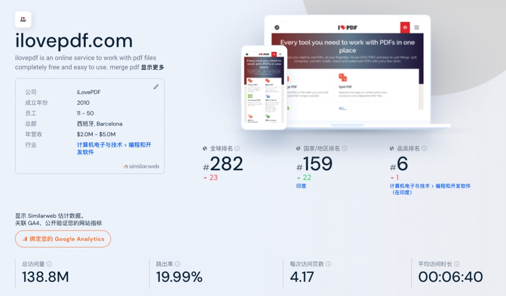
这里访问量单位 M 表示100 万，8.8M 是 880 万，138.8M 就是一亿三千八百八十万。跳出率只有20%不到，说明大家打开之后,都能够找到自己所需要的工具，说明的确是有用的工具.
如果跳出率太高，就说明进来的人打开后就关闭了页面，这种情况，要么是网站打开太慢，要么是垃圾站，满足不了搜索进来的用户的需求。每次访问页数和访问时长也说明了这个工具站是能够满足用户需求的。
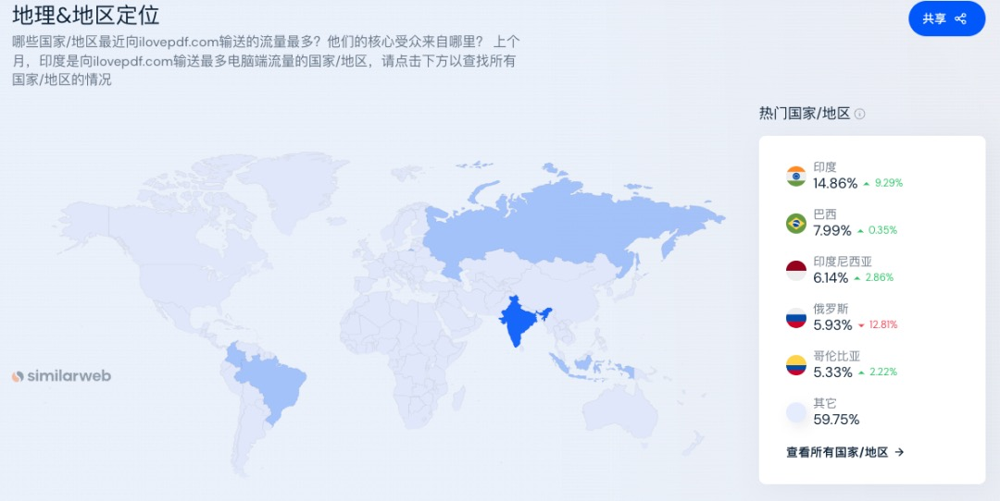
看上图，流量还是很分散的，各个国家都有。不过有些国家看起来是空白，大家可以去研究一下。
还可以看到很多类似网站，每一个网站的流量数据都展示出来了,我们可以点进每一个网站去看具体的数据.
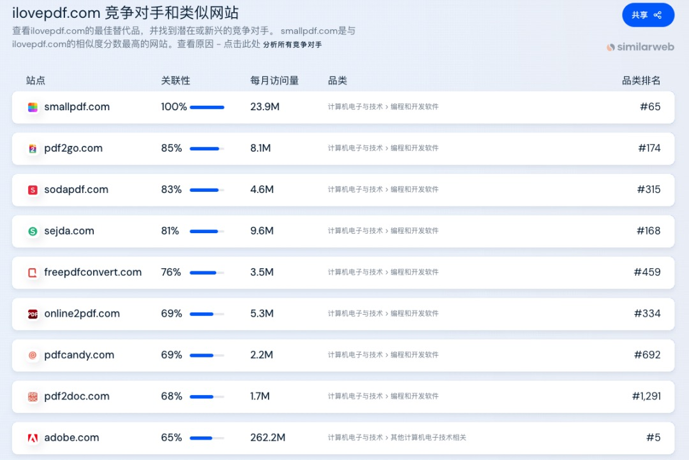
所以相当于，你只需要在谷歌找到一个网站，就能够顺藤摸瓜，找到很多网站。
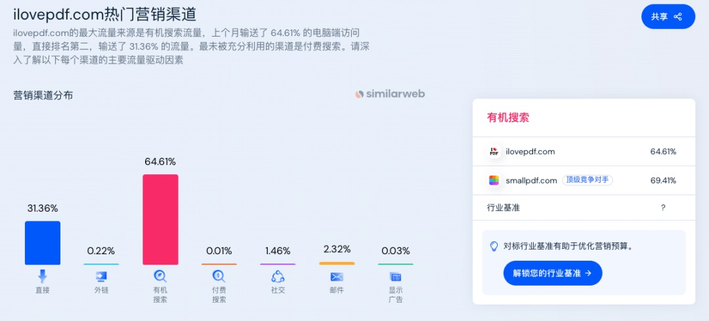
64.6％流量来自于搜索引擎，那就说明这个网站SEO真的做得好很好。同时又不是90%来自于搜索引擎，还有31.3%是直接访问的。这就是说明，这个网站能够把从搜索引擎过来的新用户转变为老用户。用户要么记住网址了，要么加入书签了。又再次印证了我们之前说的，这个网站用户体验做得好，能够满足用户需求。
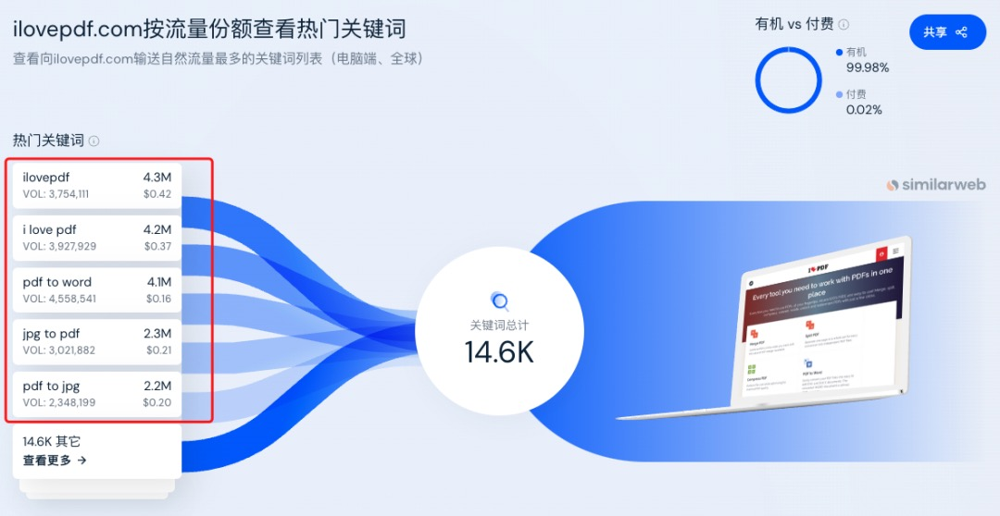
这里可以看到用户都是搜索哪些关键词进来的，可以看到品牌词就有 850 万，也说明这个品牌深入人心了。
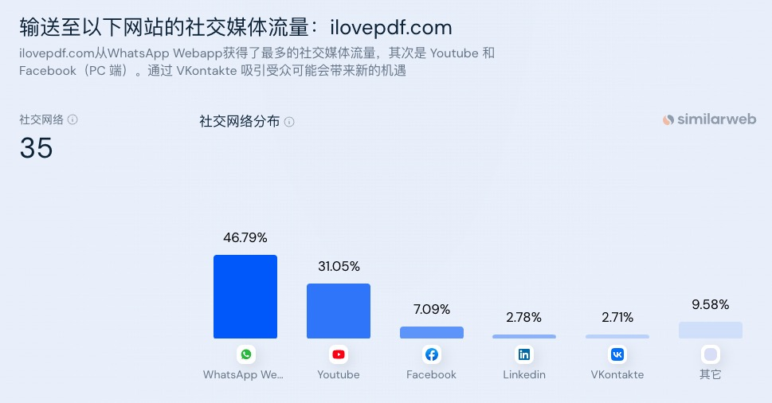
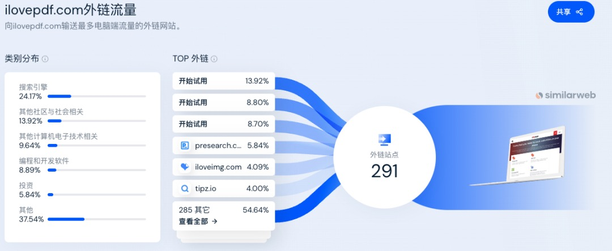
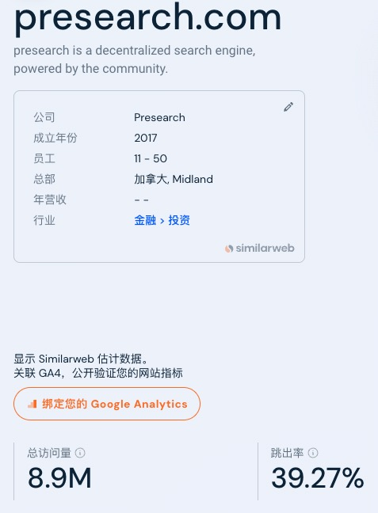
如 https://presearch.com/ ，打开就发现，每个月有 890 万访问量，也很大了。看介绍，这是一个去中心化的搜索引擎，哥飞也是第一次知道这个网站。那么对于一个新网站，我们就可以按照研究ilovepdf.com 一样，再去研究一下，说不定又会有新发现。
我们常说上网是冲浪，在互联网的海洋里遨游，那么具体怎么游，就看你会不会用这些工具了，工具用得好，眼界宽不少。
Similarweb就先给大家介绍这么多了,以上这些功能，甚至都不需要登录就能够看到。
2.2、接下来我们说说Semrush
可以用来查看网站搜索流量，搜索关键词分布,查看每个关键词流量大小，判断关键词优化难度，查看入站外链和出站域名等，功能很多。
网址：https://zh.semrush.com/projects/
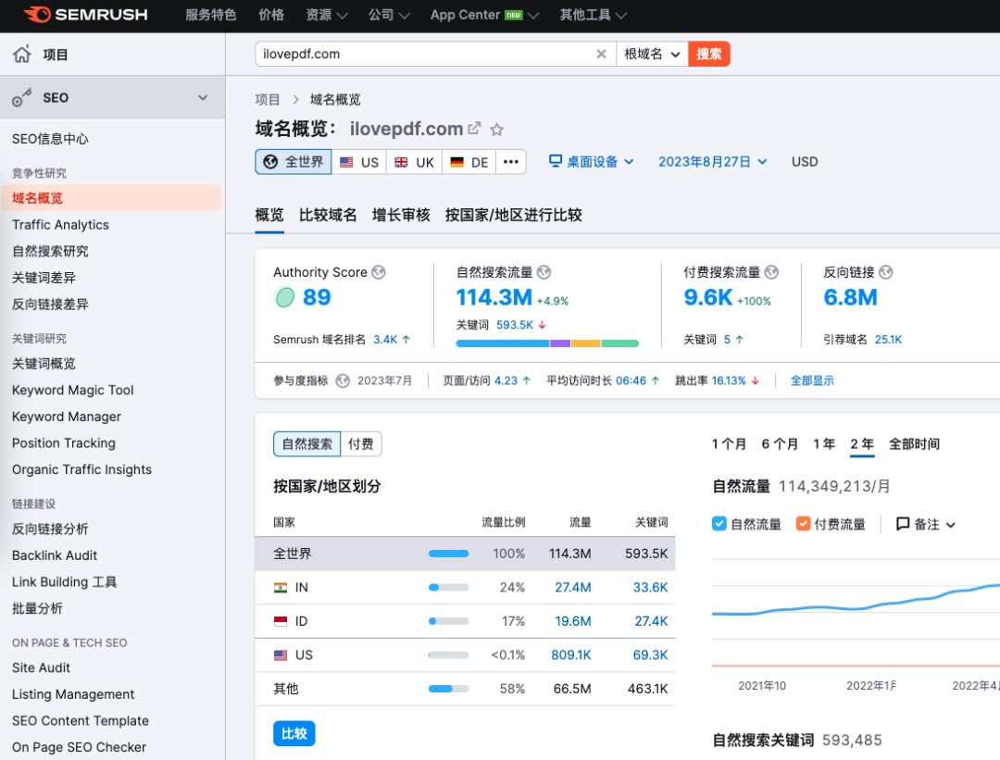
使用方式很简单，依然是把域名输入进去，提交搜索后就能看到结果页面。
这里可以看到自然搜索流量有多少，付费搜索流量有多少，反链有多少。还可以看到按照国家分布的搜索流量。
我们点击上面的 114.3M，就能看到这个站在各个国家的搜索关键字流量来源。
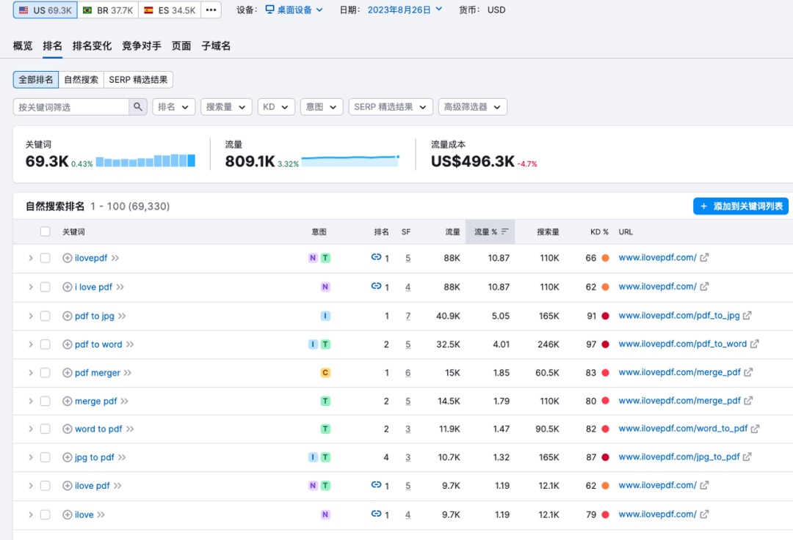
注意看 KD那一列，代表的就是这个词在这个国家的优化竞争度，数字越高竞争度越高，我们几乎无法竞争过去。
免费版本无法按照 KD 难度筛选关键字，如果是 VIP账号的话，我们可以筛选 KD值 60 以下的词，按照搜索量从高到低排序，就有可能能够挖掘到一些有一定搜索量，但是竞争难度不高的词。
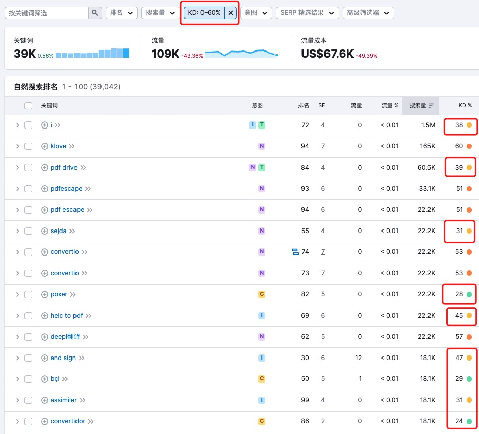
每个关键字都点击打开新页面，可以看到这个关键字的搜索量，优化竞争度，排名前几的结果。
类似于seword这种别人品牌词的，直接略过,不建议继续去看.
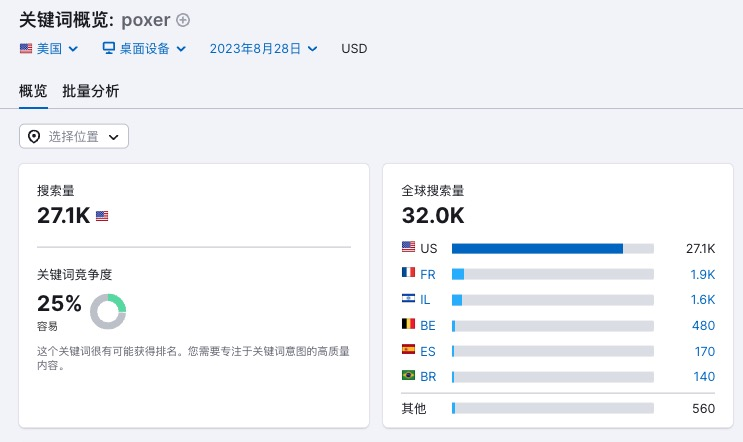
哥飞去找了一下,发现一个词“poxer”，竞争难度很低，下面的搜索结果也都是内页。那么如果我们注册一个相关域名，举全站之力去优化这个词，很容易就能够上谷歌首页。
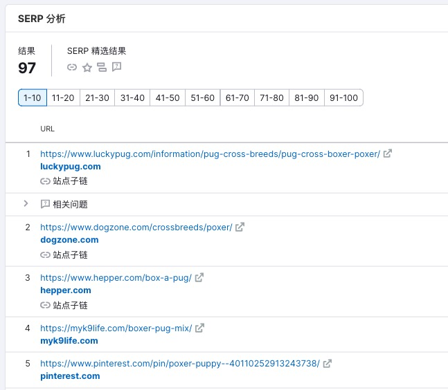
注意，“monkey pox”表示“猴痘”，“pox”表示“痘”，所以“poxer”有可能用户想了解的是患了“痘”的人相关信息。
当然，具体用户到底想找的是什么，就需要更深入地去挖掘了.
Semrush功能很多，很强大，我们今天就只介绍以上看域名和看关键字两个功能，剩下更多功能，大家自己去探索。
2.3、接下来我们聊下 Google Trends
可以用来判断流量趋势，判断多个关键字流量相对大小。
网址：https://trends.google.com/trends/
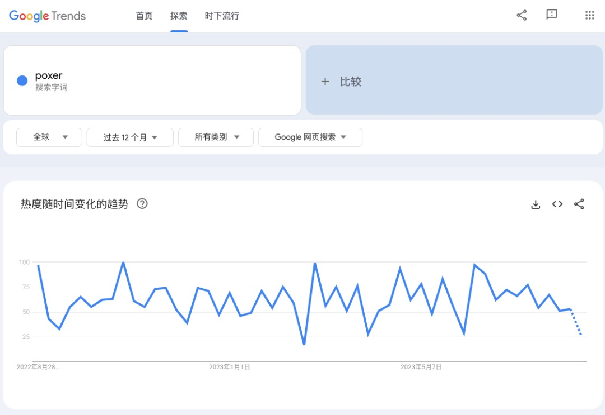
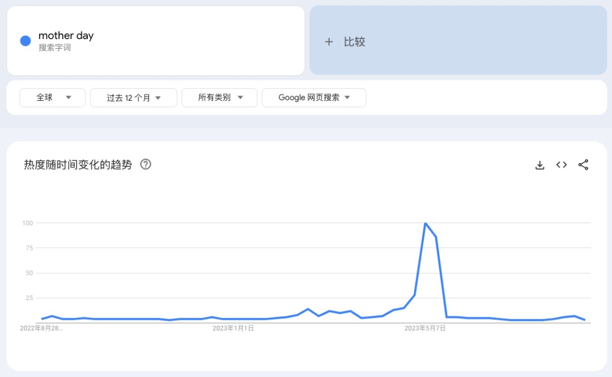
从上面两个词对比就可以看出来,有些词的搜索量是有周期性的，如母亲节，只在每年的母亲节前后搜索量高,之后全年都很低。但是“poxer”则一年都很平稳。
2.4、我们再看下ahrefs
ahrefs 功能也很强大，很多功能，我们今天只介绍免登录就可以使用的一个小工具，判断关键字优化难度
网址：https://ahrefs.com/keyword-difficulty
输入要查询的词，选择要查询的国家，点击 check按钮，就可以查询了。
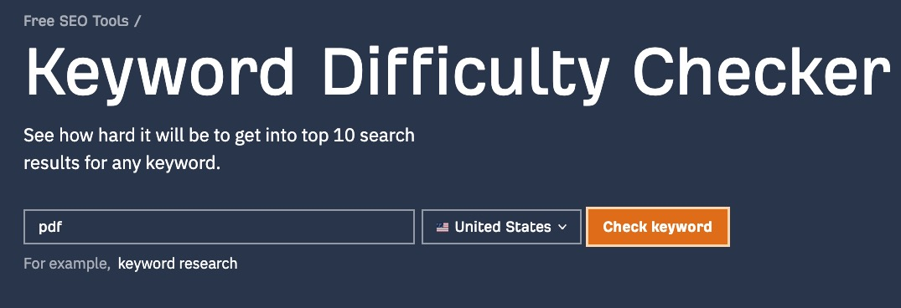
在这个结果页面,我们主要关注难度和外链数据。从页面可以看到，竞争难度95，需要1391个外链网站才有可能能排上谷歌美国搜索的前10。
通常,如果所需要的外链网站数量小于100，我们都可以去尝试一下。
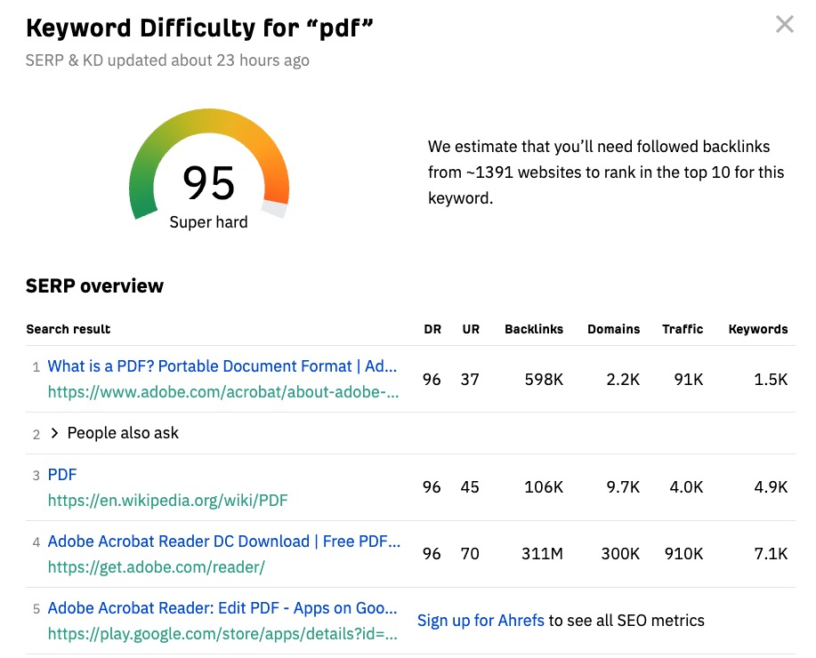
刚才我们在 Similarweb查看ilovepdf的流量也发现，在美国几乎没流量，从上图的搜索结果列表也可以看出来，ilovepdf 就没有上榜。在前10 可以看到 https://www.freepdfconvert.com/，大家可以当作作业，去分析一下这个站。
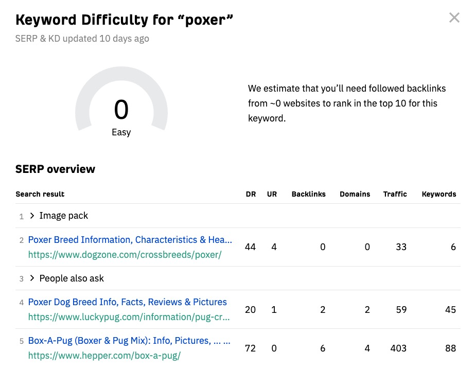
以“poxer”为例，查询结果显示难度为0，也就是说这是一个没人关注的小词新词，所以很容易就能优化上去。
好了,我们常用的工具到这里就介绍完了。
我们最后再总结一下,我们可以通过在搜索引擎查询一些工具相关的词汇，找到一些网站，然后去Similarweb查询网站流量，流量渠道，相关网站等信息。之后再用Semrush去分析网站、分析关键字，找到竞争难度低的词，再去ahrefs 这里再验证一下。
其实也不一定只看工具站，我们可以去查我们知道的任意一个有一定流量的网站，分析网站流量来自于哪些关键字，之后分析一下，有没有哪个关键字是我们可以去做的。
三、实战一下挖掘需求
接下来我们实战一下，实战之前，先给大家看一个老外发到 reddit上的帖子，关于他如何花了2000美元建站,半年多之后，就每个月有1000美元左右收入的故事。
https://www.reddit.com/r/juststart/comments/mcaodn/how_i_built_a_site_for_less_than_2000_which_now/
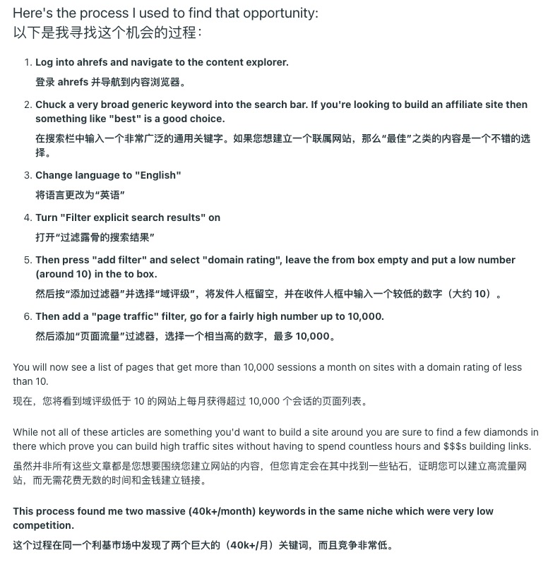
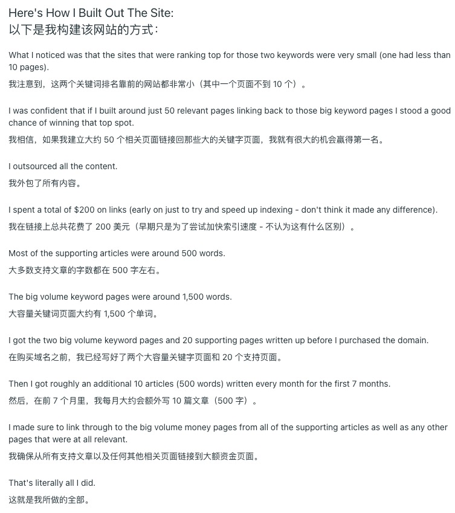
这个方法在 Semrush中也可以使用，哥飞带大家实际试用一下.
打开Keyword Magic Tool，随便输入一些词，这里我选择了猫猫狗狗这些常见的词，选择KD（竞争度）0~29%，也就是低竞争度，排除一些色情词汇，然后一个一个去看，就给我发现了“cat coloring pages” 这个词，竞争度只有27，而且搜索结果前6都是内页，那么我们注册一个域名来优化这个词，就很容易排到谷歌搜索首页。
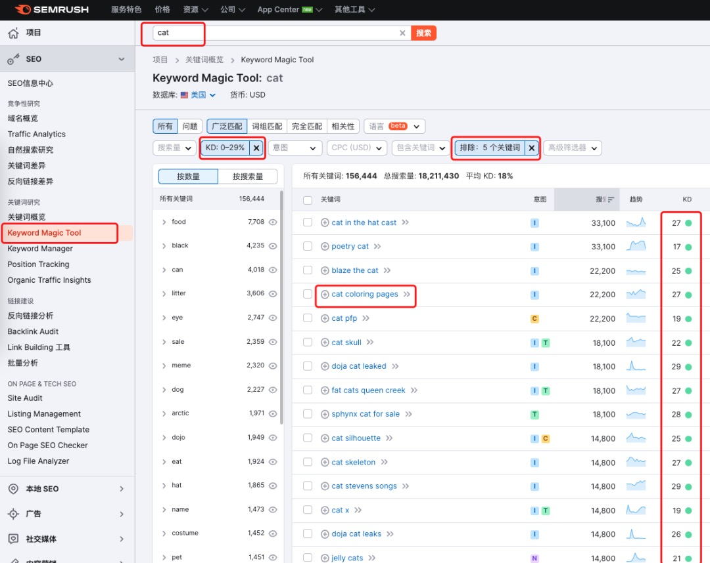
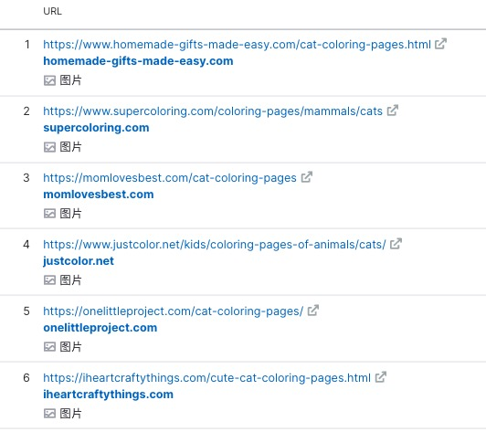
这里解释一下，对于同一个关键字，一般来讲，
域名权重大于子域名，
子域名大于子目录，
子目录大于内页。
所以对于一个竞争度比较低的关键词，而谷歌搜索前几个都是内页的情况下，那么我们注册一个域名，专门去优化这个词，那么很容易排到谷歌搜索第一页。
再在 https://ahrefs.com/keyword-difficulty 这里验证一下,优化难度9，只需要10个外链就能排到首页，说明的确值得去做。
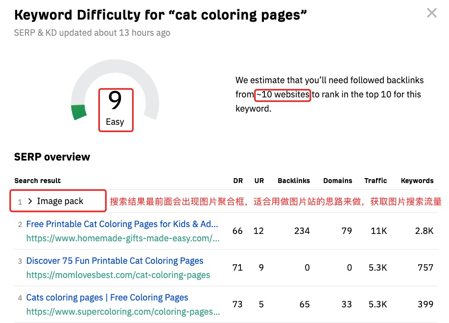
既然 cat可以，dog 是否也可以呢，flower 是否可以呢？大家可以发散思维，找到更多词。
用 coloring pages去搜索下，找到很多相关词，不过有一些词竞争难度比较大。
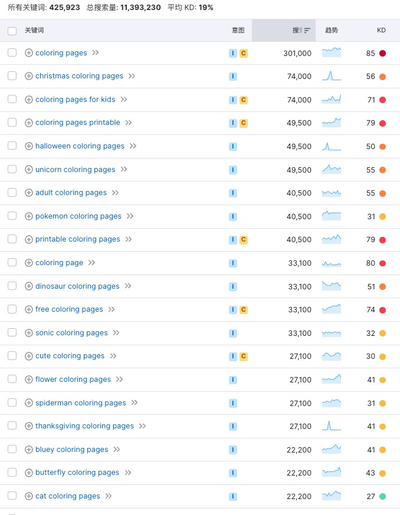
如果我们要做一个网站来满足这些词的搜索需求，要怎么做呢?
首先注册一个合适的域名，前面我们讲过，域名带上AI，会让我们的推广事半功倍，所以可以用ai-coloring-pages.com这个域名，完美符合关键字，也增加了AI 元素.
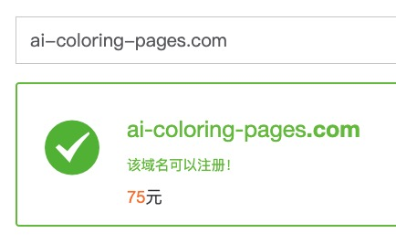
此时此刻，这个域名是可以注册的，看看谁手速快。
然后我们分析需求，用户一般都是为了找到喜欢的黑白着色线框图下载下来打印出来用于填色。
那么我们就需要在网站上放很多已经生成好的线框图，让用户可以分门别类的查找，也最好在网站上直接集成AI 画图能力，用户输入简单的词汇，如 dog、cat等,你后台就可以生成合适的prompt,去帮助用户生成图片，显示到网站上。
所有生成的图片，都公开给所有用户可见，这样你的网站就会有源源不断地产生新的图片，而不需要你去手动维护更新。
除了放广告赚钱，有没有可能收费呢？也是可以的，既然用户的需求是下载图片，那么你就可以在下载时做文章。不注册只能下载有限张图片，注册后可以下载多张图片，但是如果订阅之后，就可以批量下载图片，还可以把多张图片合并成一个pdf 供用户下载。
刚才说了，我们最好用图片站的方式来做，那么图片就要用大图，刚好用户下载下来是用于打印的，那么你就可以把所有图片都做出标准A4纸大小，让用户下载下来就可以直接拿去打印。
然后给每张图片的 alt 都写上合适的描述，让用户能够在图片搜索时找到你的图片，进而打开你的网页。
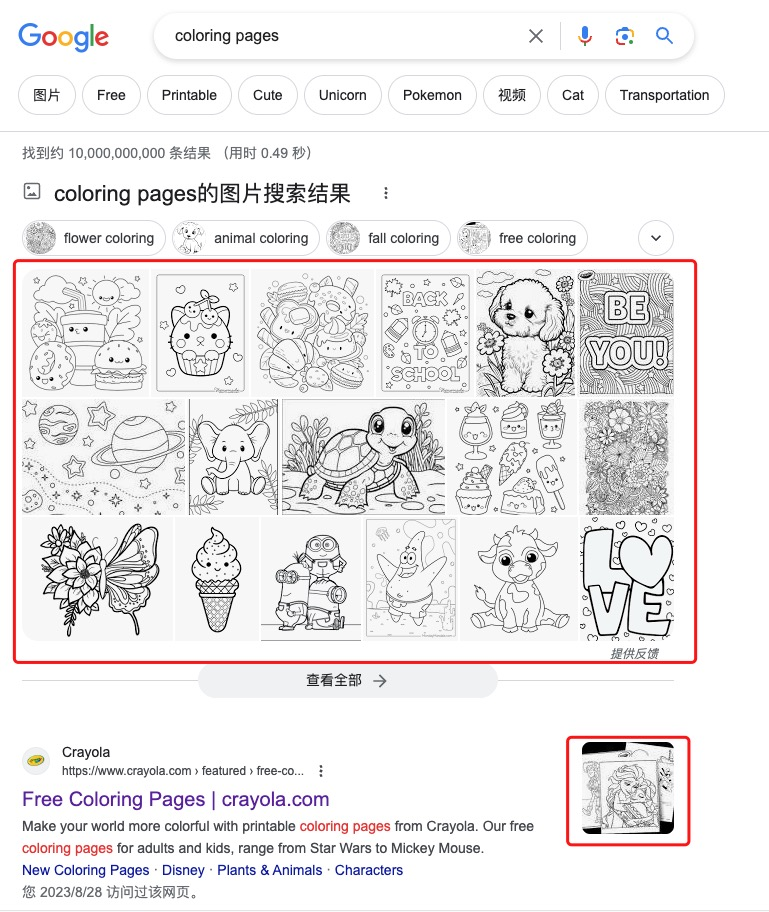
我们的目标是让我们的图片出现在红色大框位置。
而通过在网页里放置大图，且给每张图片写上契合的 alt ，就可以让爬虫能够看懂图片，从而收录我们的图片,最终显示在这个位置。
搜索结果右侧的红色小框里的图，也是网页里有图片，一般就会显示出来。
好了，上面实战部分就结束了。
四、怎么制作工具站
接下来，我们说说怎么制作工具站
最好是自己开发或者直接部署别人做好的，如果没有编程基础的话，哥飞给大家推荐一些自学资料，大家可以去学起来。
有很多在线教程，看多了反而可能会无所适从,所以初学者就看菜鸟教程入门足够了。以下三个教程不一定要全部学完了才开始做网站，可以先看一遍概览，大概了解什么是 HTML，要想显示出样式要用CSS，要想点击有效果要用JS 就可以了，然后根据你的需求，想要什么就找到对应的章节去学习。
HTML 教程 https://www.runoob.com/html/html-tutorial.html
CSS教程 https://www.runoob.com/css/css-tutorial.html
JS 教程 https://www.runoob.com/js/js-tutorial.html
这里还有一个 B站的视频教程也可以看 https://www.bilibili.com/video/BV1Wr4y1R7Bd/
还可以找ChatGPT 辅助学习，务必尽快学会做一个简单的网页.
如果你已经有了开发能力了，以上讲的这些都不在话下了.注意不要陷入追求高大上的技术栈的陷阱。
我们做的是有AI能力的工具，交互不会特别复杂。如果你会用vue ，那么用vue 没问题。如果不会，那么就直接用原生js就足够了，最多加上一个jQuery 。
如果你没有开发能力，又实在不想学，那么还可以找人组队合作，团队的力量一定会比个人单打独斗更强。
最后，其实不管你有没有开发能力,都可以基于别人开源的代码拿来改改就用。
Github https://github.com/ 可以找到很多开源代码，有很多代码是完整的项目，可以直接拿来就用。
Vercel模板中心 https://vercel.com/templates 有很多可以一键部署拿来就用的模板。
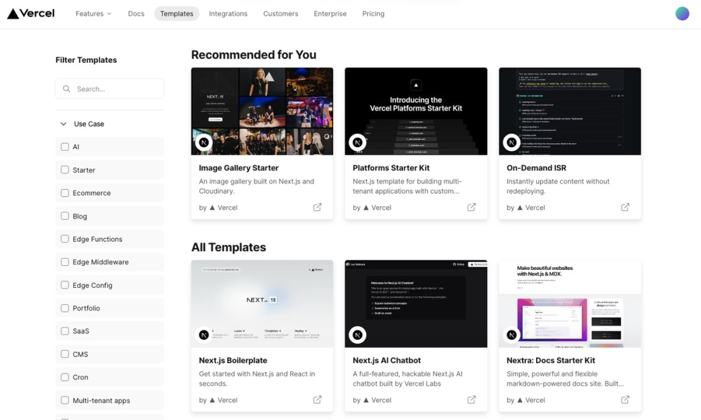
哥飞以前在即刻讲过，有个朋友 3月份注册的域名，一直没去用起来。
前段时间看到哥飞分享的Vercel模板中心后，就在里边找到了一个直接能用的模板，改个名字就上线了。
后来提交到了ProductHunt，被很多AI导航工具收录，获得了两千多个外链。
从谷歌也有了搜索流量过来，后来还被国外各种营销号推荐。
也就是说，目前这个阶段，只要我们的产品跟 AI有关，那么就能够得到用户的自发传播。
还有 https://codecanyon.net/search/ai 有很多收费的源码，有完整的功能，价格不贵，只要几十美元。
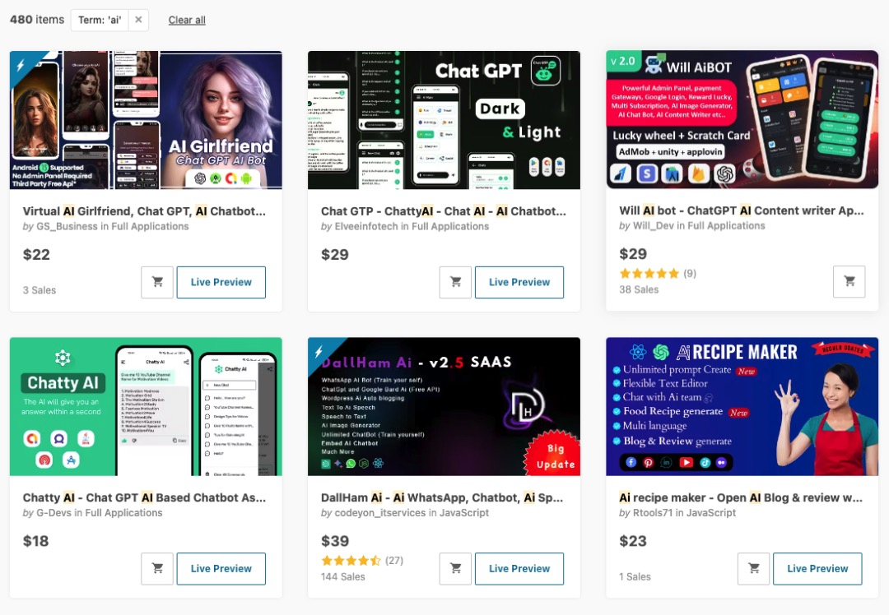
我有一个朋友，有一个完美的单字母域名,想用来做一个短链网站,但是因为他自己不会开发，域名就一直在那里放着。
直到看到我介绍 codecanyon 之后，在上面找到了一个现成的系统，只要 225 美元，现在已经部署上线了.甚至连stripe 都在后台配置一下，就可以用了。
我去体验了整个网站功能，发现如果要找人定制开发的话，几万块钱都要.
但是在codecanyon 上面只需要 225美元就搞定了。
好了，今天的文章到这里就结束啦。